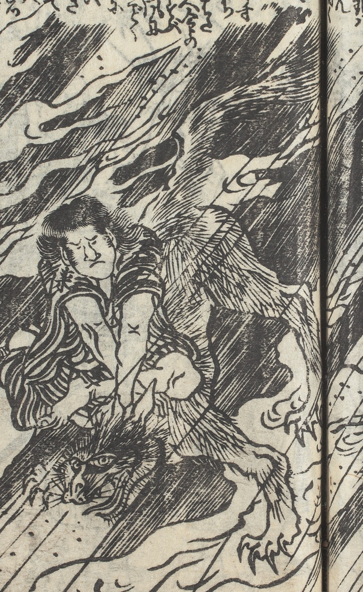

雷；カミナリ，雷獣；ライジュウ，動物；ドウブツ

雷雨の中、雷獣が組み伏せられている。陰火をまとっている。
著作者：式亭三馬作・豊國画／出典：親書誌：U426_nichibunken_0450：淺草觀音利益仇討雷太郎強惡物語／日付：2021／資源識別子：U426_nichibunken_0450_0001_0000
Copyright (c)2010- International Research Center for Japanese Studies, Kyoto, Japan. All rights reserved.